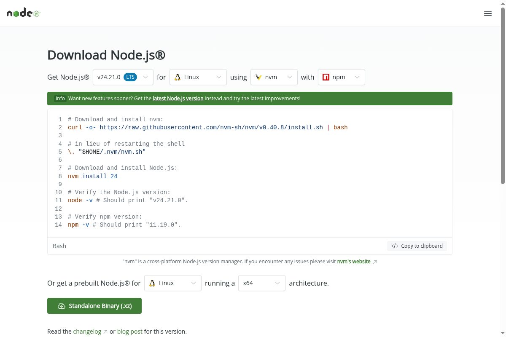
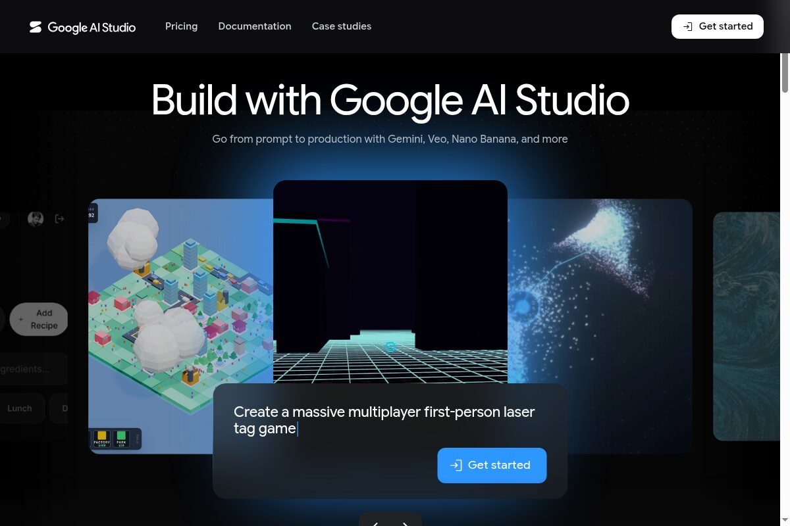
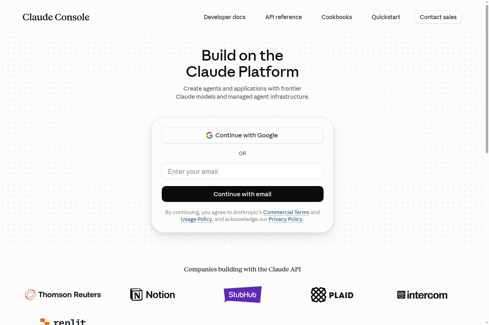
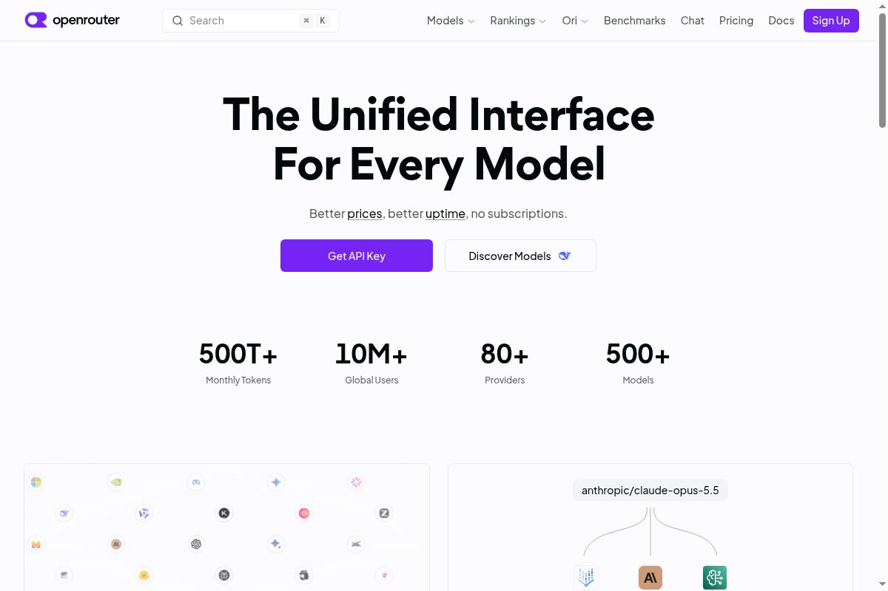
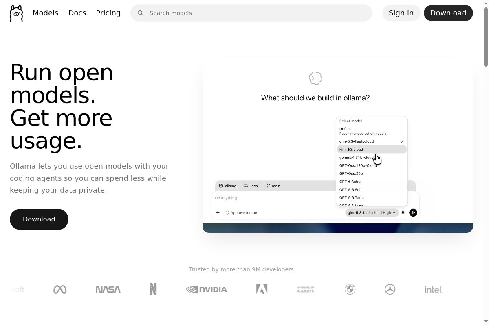

START HERE / BEGINNER'S GUIDE
Never opened a terminal? This page is for you.
This guide assumes nothing. It walks from an empty laptop to a working Relay Runner with AI mode, one step at a time, with a picture of every screen that matters. Set aside about 20 minutes. When a step has a picture, compare your screen to it before moving on.
What you will end with: the project running on your own computer, a demo that needs no accounts, and AI mode connected to a provider you chose, with your own key. Nothing runs in the cloud on our side; there is no account to create with us.
Install Node.js
Relay Runner is a Node.js program, so Node must be installed first. Node is free.
Go to nodejs.org and download the version marked LTS (Long Term Support). Anything 20 or newer works; the LTS button always gives you a safe choice.

Run the downloaded .msi file and click Next through the installer. The defaults are correct, including “add to PATH”. When it finishes, open PowerShell from the Start menu.
Run the downloaded .pkg file and click through it. Then open Terminal (Applications → Utilities → Terminal, or search “Terminal” in Spotlight). If you already use Homebrew, brew install node works too.
Use your distribution's package manager (for Ubuntu/Debian: sudo apt install nodejs npm), or follow the Nodesource instructions linked from nodejs.org for a newer version.
Check it worked
In the terminal or PowerShell window, type this and press Enter:
node -vYou should see something like v22.14.0. Any number starting with 20, 22 or higher is fine. If you see “command not found” or “not recognized”, close the terminal, open a new one, and try again; the installer only adds Node to windows opened after it ran.
Get the code
Two ways. Pick whichever is comfortable; both give you the same folder.
Option A: download the ZIP (no Git needed)
Open github.com/Aditya2375/relay-runner, click the green Code button, choose Download ZIP, then unzip it somewhere you can find again, like your Documents folder.
Option B: clone with Git
git clone https://github.com/Aditya2375/relay-runner.gitOpen a terminal inside the folder
Every command from here on must run inside the relay-runner folder.
Windows: hold Shift and right-click the folder, choose “Open in Terminal” or “Open PowerShell window here”.
macOS: right-click the folder in Finder, choose “New Terminal at Folder”. (If it is missing: Finder → Settings → Services → enable it.) Or open Terminal, type cd with a trailing space, drag the folder onto the window, press Enter.
Linux: most file managers offer “Open in Terminal” on right-click, or use cd with the folder path.
Check you are in the right place:
lsYou should see names like bin, src, test and package.json. On Windows PowerShell, dir shows the same thing.
Install and run the demo
npm install
npm run demonpm install finishes almost instantly: Relay Runner has no runtime dependencies, so there is nothing to download. It is not hanging; it really is that quick.
The demo runs a private, zero-network loop on your machine: it signs four jobs and executes them, and shows the command gate refusing one job until the operator allows it. If you see it finish with a summary, everything works. No account, key or internet connection was needed for anything so far.
Pick an AI provider
AI mode sends the files you point at to an AI provider and shows you the edits it proposes, applying them only after you approve. You bring your own key; nothing is stored in the project. Pick one row of this table:
| Provider | Cost, honestly | Good if |
|---|---|---|
| Google Gemini | Free tier available. Google gives AI Studio keys a free allowance with rate limits; you do not enter a card. | You want the free path. This is the default and the rest of the guide assumes it. |
| Anthropic Claude | Pay-per-token. There is no free tier: you add credit (a few dollars is plenty to try) before any request works. | You specifically want Claude models. |
| OpenAI-compatible | OpenAI and OpenRouter are paid (pay-per-token, no free tier). A local Ollama server is free and needs no key at all. | You already pay for OpenAI/OpenRouter, or you want everything local with Ollama. |
Then follow only the section for your choice.
5A · Gemini: the free path
Open aistudio.google.com.

Sign in, then click Get API key in the left sidebar, then Create API key. Copy the key it shows. That string is your RELAY_GEMINI_KEY.
5B · Anthropic Claude: pay-per-token
Open console.anthropic.com and create an account.

Before any key works you must add credit under Billing (pay-per-token; there is no free tier). Then go to API keys, create one, and copy it. That string is your RELAY_ANTHROPIC_KEY.
5C · OpenRouter: one key, many models, paid
Open openrouter.ai, sign in, add a small credit balance, then open Keys.

Create a key and copy it (RELAY_OPENAI_KEY), and note the model name you want, for example openai/gpt-4o-mini (RELAY_OPENAI_MODEL). You will also set RELAY_OPENAI_BASE_URL to https://openrouter.ai/api/v1.
5D · OpenAI directly: paid
Open platform.openai.com, sign in, set up billing (pay-per-token, no free tier), then create a key under API keys and copy it. That string is your RELAY_OPENAI_KEY; no other setting is needed. (This is the one section without a screenshot: OpenAI's sign-in page blocks our recording browser, so we describe it instead.)
5E · Ollama: free and fully local
Open ollama.com and install the app for your system.

Then pull a model and start the server:
ollama pull llama3.1
ollama serveNo key is needed. You will set RELAY_OPENAI_BASE_URL to http://localhost:11434/v1 and RELAY_OPENAI_MODEL to llama3.1. Local models are weaker than the hosted ones; expect simpler edits.
Set the environment variable
An environment variable is how you hand the key to the program without writing it into any file. The command depends on your system. Replace the example with your real key, keep the quotes, and put no spaces around the =.
$env:RELAY_GEMINI_KEY="paste-your-key-here"This lasts until you close that PowerShell window. To save it permanently, use setx RELAY_GEMINI_KEY "paste-your-key-here" once, then close and reopen the terminal.
export RELAY_GEMINI_KEY="paste-your-key-here"This lasts until you close that terminal. To save it permanently, add the same line to ~/.zshrc (macOS) or ~/.bashrc (most Linux), then open a new terminal.
Using a different provider? Swap the variable name: RELAY_ANTHROPIC_KEY for Claude; RELAY_OPENAI_KEY (plus RELAY_OPENAI_BASE_URL and RELAY_OPENAI_MODEL) for OpenRouter, OpenAI or Ollama. Using Claude or an OpenAI-compatible provider? Also tell Relay Runner which provider to use with --provider anthropic or --provider openai, or set RELAY_AI_PROVIDER once the same way.
Keep the key private. Treat it like a password: do not paste it into chat rooms, screenshots or source files. If one leaks, delete it in the provider's console and make a new one. Relay Runner reads it from the environment and never stores it.
Your first AI task
Still in the relay-runner folder, run:
node bin/relay.js ai --task "add a one-line summary to the top of README.md" --workspace . --provider gemini(Leave off --provider gemini if Gemini is your default; use anthropic or openai if that is what you set up.)
What happens, in order: Relay Runner reads the project files, sends them with your instruction to the provider, prints the proposed changes as a diff, and then asks:
Apply these edits? [y/N]Nothing is written until you type y and press Enter. Type anything else, or just press Enter, and it stops without touching a file. Every run, approved or not, is logged to .relay/ai.log with the provider and model used.
Optional: the listener
Relay Runner can also accept signed jobs over HTTP on your own machine. This is the transport half of the project; it is not needed for AI mode.
node bin/relay.js allow my-agent --home ./sandbox
node bin/relay.js listen --home ./sandboxLeave that window running, open a second terminal in the same folder, and send a job:
node bin/relay-agent.js system.summary --sender my-agent \
--key-file ./sandbox/.relay/senders/my-agent.keyThe listener binds 127.0.0.1 only, so nothing outside your computer can reach it. Every request and every rejection lands in ./sandbox/.relay/run.log.
When something goes wrong
| You see | What it means / the fix |
|---|---|
| 'node' is not recognized / command not found | Node is installed but this terminal was opened before the install. Close it and open a new one. Still failing? Reinstall Node and keep “add to PATH” ticked. |
| Cannot find module ... | You are not inside the relay-runner folder, or npm install has not been run here yet. Check with ls, then run npm install. |
| AI mode needs your own Google Gemini API key: set RELAY_GEMINI_KEY | The variable is not set in this window. Run the export / $env command from step 6 again in the same window, then retry. |
| API error 401 or 403 | The key is wrong, revoked or copied with a stray space. Make a fresh key and set it again, carefully. |
| API error 429 | Rate limit. Gemini's free tier only allows so many requests per minute; wait a minute and retry. On a paid provider it means you hit your own limits. |
| API error 400 / model not found | The model name does not exist for that provider. Set RELAY_AI_MODEL (or RELAY_<PROVIDER>_MODEL) to a model your account can use. |
| fetch failed / ECONNREFUSED with Ollama | The Ollama server is not running. Start it with ollama serve in another window. |
| Nothing applies, it just stops | That is the approval gate working: it only writes after you type y. Pressing Enter alone means “no”. |
What this guide does not get you, yet
- AI mode is one careful step; agent mode is the loop.
node bin/relay.js agent --task "..." --workspace .plans, edits, runs commands and retries until done - with your approval on every write and command, and--enable-commandsrequired before any command runs. It is genuinely multi-step, but it is not Claude Code: whole-file writes only, no memory between runs, no native tool-calling, and weak models can burn the step cap without finishing. - Env vars are per-window. Until you save them permanently (step 6), every new terminal needs the export again.
- The website cannot run anything. github.io pages are static copies of this guide; everything real happens in your terminal.
- A weak model gives weak edits. Free tiers and local models are fine for learning, but review every diff before typing
y, especially at first.
One step further: agent mode
When a single edit is not enough, agent mode loops: plan with the model, act, check the result, retry. Every write and every command still waits for your approval.
node bin/relay.js agent --task "fix the failing test in this project" --workspace . --enable-commandsFor the security model, task list and protocol detail, continue to Get started and the repository README.